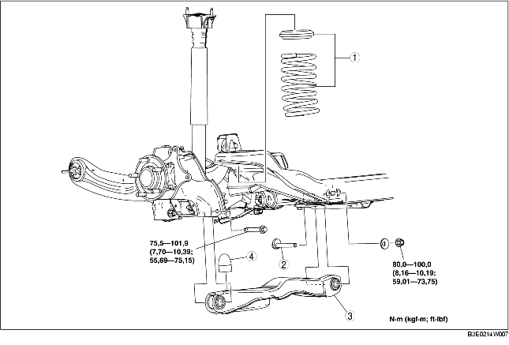

1. Quitar según el orden indicado en la tabla.
2. Instalar en el orden contrario al de la remoción.
3. Controlar la alineación de las ruedas y ajustarla si necesario.
(Véase ALINEACION RUEDAS TRASERAS).

.
|
1
|
Conjunto muelle helicoidal trasero
|
|
2
|
Perno interior brazo inferior trasero
|
|
3
|
Brazo inferior trasero
|
|
4
|
Tope de carrera amortiguador
|